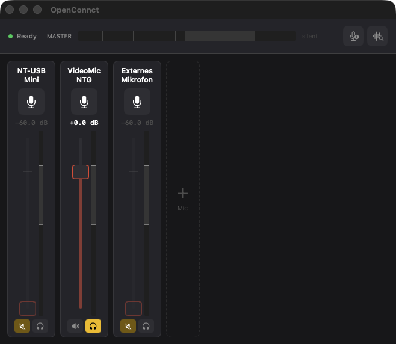

Two USB microphones, one input.
OpenConnct is a Mac app that mixes several USB microphones into one virtual input. Choose OpenConnct Mic in Teams, Zoom or OBS, and everyone on the other end hears the mix.
Download OpenConnct {{VERSION}} How to install
Version {{VERSION}}, maintained. Needs macOS 13 or later.

Two microphones never agree on what time it is
Every USB microphone runs on its own clock, and neither is the clock your Mac's output runs on. Software that ignores that drifts: first a click, then a dropout every few seconds.
OpenConnct measures each microphone against the output and corrects it continuously, so the mix stays clean for as long as you talk. The correction is tested against simulated drift of up to 200 ppm over two hours.
What you get
- A strip for every microphone
- Gain, high-pass filter, noise gate, compressor, mute and solo. Everything is remembered per microphone, so a mic you plug back in returns exactly as you left it.
- One input for every app
- Teams, Zoom, OBS and anything else that can pick a microphone can pick OpenConnct Mic.
- A gain that finds itself
- Say a sentence and OpenConnct proposes a gain from your measured voice, instead of asking you to guess.
- New devices arrive muted
- A headset that connects itself never joins your call unannounced. One click un-mutes it when you want it.
OpenConnct is only the mixing stage. It does not record, play sounds or monitor through headphones.
Get it
- Download the disk image and drag OpenConnct into your Applications folder.
- Open it and click Install when it offers the audio driver. You sign in once, and audio drops out across the Mac for about a second.
- In Teams, Zoom or OBS, choose OpenConnct Mic as the microphone.
Download OpenConnct {{VERSION}}
Signed with a Developer ID and notarized by Apple. Works on Apple Silicon and Intel Macs running macOS 13 or later.
Privacy
OpenConnct collects nothing. There is no account, no analytics and no telemetry. The only network request the app makes on its own is a daily check of GitHub for a newer version. This page sets no cookies and loads nothing from other sites.